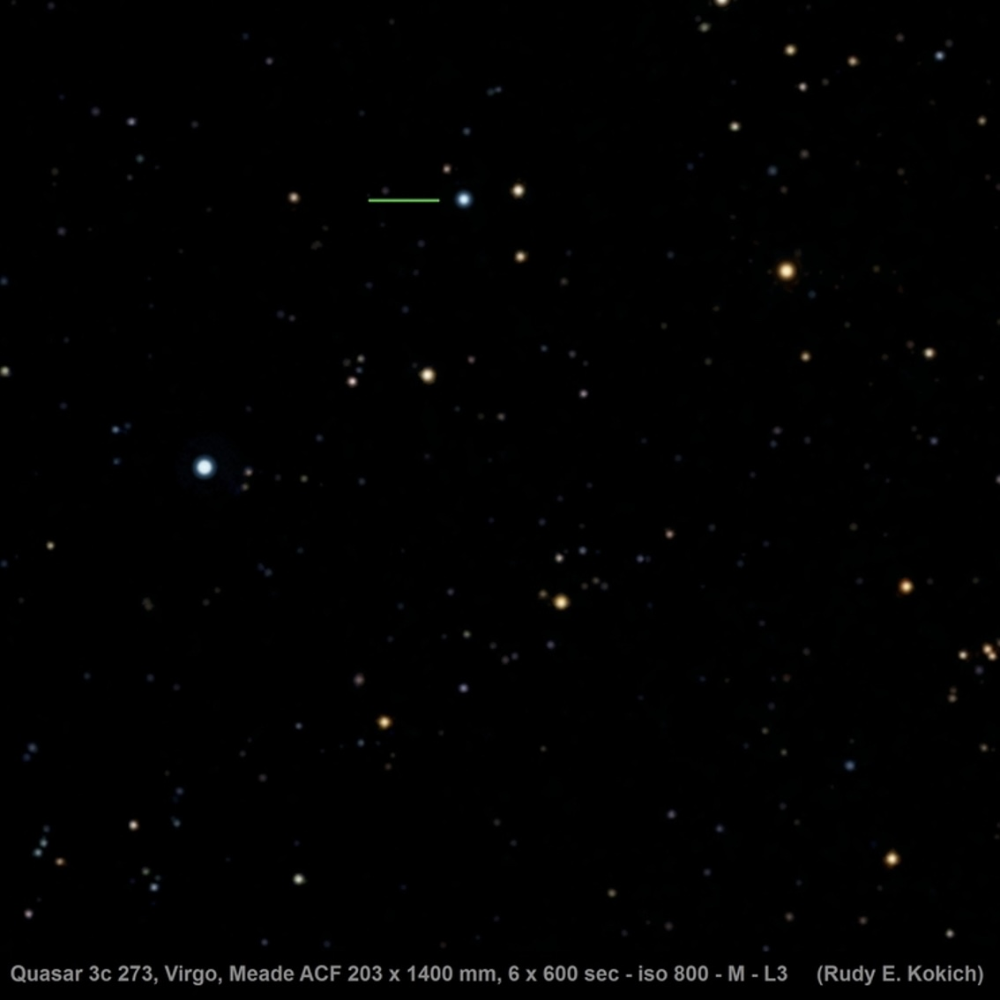
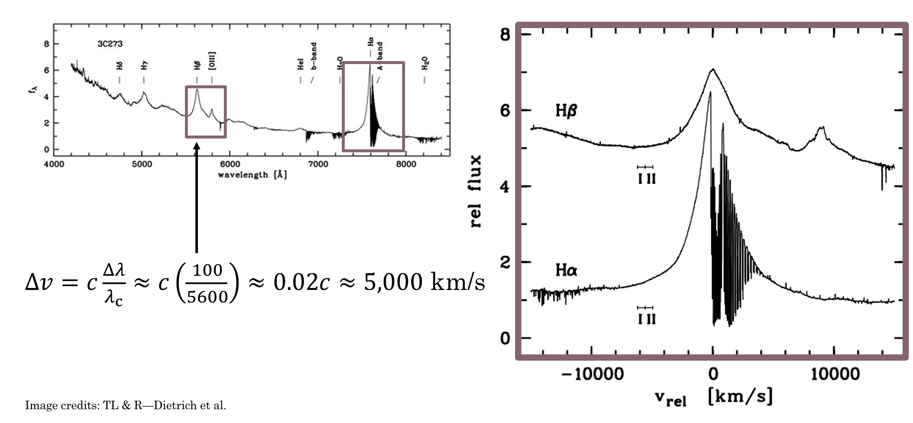
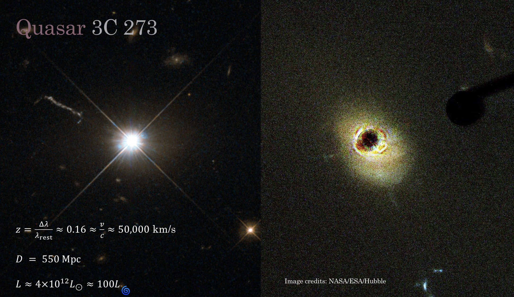
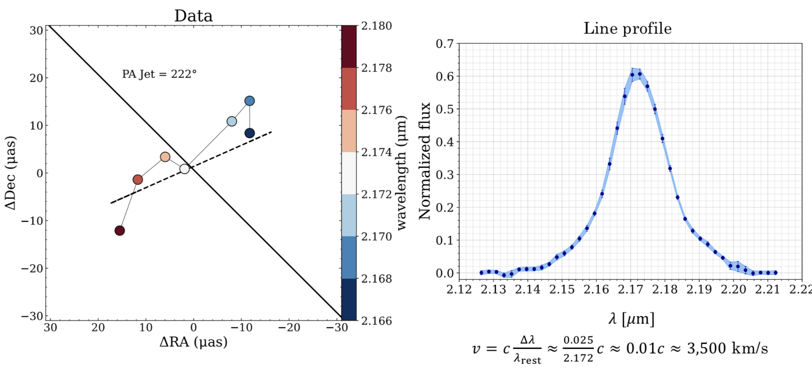
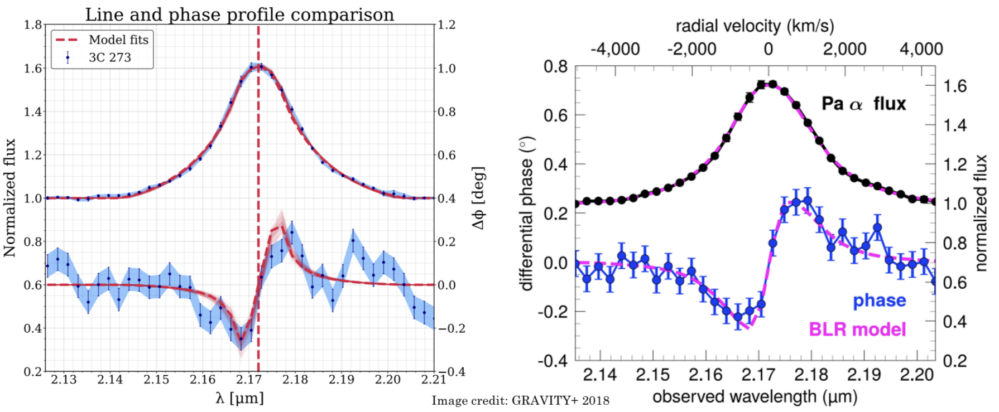

My first paper explained!
My first paper — "Confronting a Thin-Disk Wind Launching Mechanism of Broad-Line Emission in AGN with GRAVITY Observations of Quasar 3C 273" — is going to be submitted soon, and in the spirit of keeping science as accessible as possible I thought it might be nice to use my blog to do a little explainer. Throughout this explainer I'll try to avoid jargon as much as possible and keep things at an accessible level for my family/friends who aren't astrophysicists — if you want the gory technical version you can find that draft here!
As a first step, let's break down that awfully convoluted title. The layman translation of "Confronting a Thin-Disk Wind Launching Mechanism of Broad-Line Emission in AGN with GRAVITY Observations of Quasar 3C 273" is something like this:
- "Confronting a Thin-Disk Wind Launching Mechanism" → we extended/developed a model (of a thin disk orbiting a black hole that is launching "winds" off of it) and applied it ("confronted") to some data.
- "of Broad-Line Emission in AGN" → our model can explain the broad spectral lines we observe in space around active galactic nuclei (AGN) — galaxies with supermassive black holes at their centers that are eating lots of stuff. More on the broad spectral lines below.
- "with GRAVITY Observations of Quasar 3C 273" → the data we applied our model to comes from an instrument called GRAVITY, which is part of the Very Large Telescope Interferometer (a bunch of big telescopes in Andes mountains whose light is combined to simulate an even bigger telescope). Specifically, we modelled data from the object 3C 273, which is a quasar (another fancy word for a very active supermassive black hole at the center of a galaxy).
We're going to work backwards through this title, starting first with what exactly a quasar is and how they were discovered, because it's a great story!
The quasar I studied as part of this work is designated 3C 273, which is a pretty boring name but corresponds to some interesting history. The 3C represents the fact that this object was first found as part of the "third Cambridge" radio survey of the sky, and the 273 means it was the 273rd source found in that survey. This survey that first detected it was done in the late 1950s, and 3C 273 was one of the "loudest" sources detected! The early radio interferometer at Cambridge that found it had pretty limited resolution, however, so for a while we didn't know what this bright blob in the radio precisely corresponded to in the sky. The source was detected in the constellation of Virgo, which as you may know is one of the Zodiac constellations. All of the Zodiac constellations are aligned with the plane of the solar system, which we call the ecliptic, and this presented a unique opportunity to figure out what 3C 273 actually was. The moon also resides close to the ecliptic plane, and an astronomer named Cyril Hazard had the bright idea to take a bunch of radio data as the moon moved through Virgo — he hoped that the moon would travel in front of whatever 3C 273 was and thus block out the radio signal and allow astronomers to more precisely constrain its location. And it worked! Using the Parkes Radio Telescope in Australia they saw the dip in the signal as the moon moved in front, which then allowed Maarten Schmidt to find it with an optical telescope (the 200 inch Hale telescope in California) and take a spectrum.
What they found suprised them — it appeared that what was making this incredible fuss in the radio was just a boring, dot that visually resembled the faint stars around it. This is where the name "quasar" originates. For a while we weren't sure what objects like 3C 273 were, but we we knew they were "quasi-stellar" and had coincident "radio sources" — mash those words together and you get "quasar" for short. 
They could tell it wasn't a star, however, because of its spectrum. If you aren't familiar, a spectrum is where we split incoming light up into all its component colors, comparing the strengths of each color vs. another. We can use this to infer what something is made out of (different elements glow in different colors) as well as guess at what kind of object it is, as different objects have different characteristic spectral shapes. The shape seen in the spectra from 3C 273 was unlike anything anyone had seen before, in particular because of its remarkably broad emission lines. The distinct colors that each element glows in correspond to what we call spectral lines. Usually these are spiky, narrow features, but in 3C 273 they were observed to be extremely broad. This was the first hint about the true nature of 3C 273 — it told us that the gas that was emitting this light was likely moving very fast. While there are a few ways in physics for lines to broaden, none of the usual suspects could get anywhere close to how large 3C 273's broadening was. One of the mechanisms lines are broadened is called Doppler broadening — like the Doppler effect — where random motions of the gas towards and away from the observer create a broader peak. Usually this kind of broadening happens because the gas is hot, as hotter things are moving around more and thus the smearing effect is larger. But here in 3C 273 the effect was so strong it couldn't be explained by temperature, and instead we needed another mechanism — gravity.  Above you can see that if we take the spectrum of 3C 273 and convert it into units of change in velocity (via the formula in the image) the width of the lines are thousands of km/s! Thus it was realized that the strong broadening observed in the lines was due to the fact that the gas emitting was orbiting something quite quickly.
But this was only part of the mystery the spectrum contained. Initially when astronomers attempted to match the spectral lines seen to those that elements on Earth produced things weren't lining up. Eventually they realized this meant the entire spectrum was redshifted a significant amount. What is redshift? Objects moving away from us appear redder than objects moving towards us — analagous to how the pitch of an ambulance rushing by increases as it comes towards you then decreases as it speeds away. You may have heard that the universe is expanding, with galaxies on average moving further and further apart from each other as time goes on. This was first discovered by Edwin Hubble a few decades previously, and he showed that the faster something is moving away from us the further away it is in space. With the redshift obtained from 3C 273's spectrum it was determined that it was more than two billion light years away! That's much farther than any of the stars surrounding it, and meant that in actuality its intrinsic brightness was 100x that of an average galaxy. Later observations found a giant jet shooting off from the center (we now know much of the radio emission is associated with this feature) and revealed that it was actually an extrememly bright center to a galaxy, as the Hubble image on the right below shows. 
Combined, all these bits of evidence led astronomers to believe that 3C 273 was actually a supermassive black hole at the center of a galaxy more than two billion light years away. These are violent and highly variable (on universal timescales anyways) objects that are witness to some of the most extreme physics in the entire universe. Later observations of quasars showed that you could even estimate their masses via an approach called reverberation mapping, where you watch for how long it takes variations in the gas that's creating the emission lines to respond to changes in the overall brightness of the quasar. This time delay between when the black hole "burps" and when the emission lines respond can give you a crude distance estimate for where the gas creating the emission lines is with respect to the black hole, and we call this the "broad-line region". This region is what I've spent the last two years modelling and is the real subject of my paper!
Even the closest quasars are too far away for us to directly see what's happening close to the black hole where the broad-line region is, so all we've really been able to do is look at the shape of the emission lines and roughly estimate how far away they are by measuring time delays using reverberation mapping. The broad emission lines we see generally have one peak — this is really important! If you imagine a black hole in your head you probably have some kind of picture that there's this crazy dark thing in the center surrounded by a turbulent disk (think the Interstellar black hole) of hot gas and dust that the black hole is eating. Just as water going down your drain flattens out into a whirpool shape astrophysicists belive there is a central accretion disk that black holes feed of off. But how far out does this disk extend? Is the gas in the broad-line region a disk? While it seems like the simplest answer is to just make everything a big disk, it turns out it's hard to get a single peak in a spectral line if you have a disk — and that's a problem because we only see one peak! If you use a simple disk emitting the same way in every place you actually get two peaks, as the animation below shows. First, we start with a sphere of gas (like a star!) that's not spinning at all, and you can see we have a nice narrow line profile with a single peak. If we spin up this ball of gas we see the line gets bigger, but there's still just one peak! Next we tilt the sphere, such that we go from looking at it at the equator to looking down the pole, and we notice that the line profile goes back to how it was before! This is because when we look straight down at the spinning ball no part of it is spinning towards or away from us, so the line profile goes back to its narrow original form. Next we cut out a hole in our sphere of gas and turn it into a record player style disk, and we rotate it back down until we're looking almost edge on (75 degrees). Here we start to see the problem — there's two peaks starting to form! But overall the velocity scale for the line profile is still only 10s of km/s, and we need to get it to be thousands of km/s to match the scale for 3C 273. To match this we finally simulate orbiting gas (where gas closer in orbits faster) and increase the mass until we are at the right scale. You'll notice that at the end of this we have two very disparate peaks, and this doesn't at all look like the line profile shown in the image above. Does this mean the broad-line region can't be a disk?
This is the crux of the problem I've tried to answer with this paper. Generally it's assumed that the broad-line region is not a disk because of this problem, but instead a distribution of puffed up "clouds" of gas that orbit the black hole more randomly. This makes them a better analog to the sphere of gas first shown in the animation above and means they can reproduce the line profile without any of this double peak nonsense. While it has that going for it, it's much less physically intuitive. Wouldn't it just be so nice if everything were a nice ordered disk? How could those puffy clouds end up on all those random orbits anyways?
While the cloud model is the standard one used today, in the late 90s authors Chiang and Murray proposed an alternative method for obtaining the single peak in the broad-line profile using a thin disk! The key to making their model work
is that their thin disk has to let more light out in the front and back (where it's not moving towards or away from the observer) than it does on the sides, and they showed that you could use some fluid approximations to make this work out nicely.
They showed if you have an orbiting fluid-like thin disk and introduce a radial velocity shear, you can get the single peak you need! We took their model as a starting point and extended it, adding a few other possible shears in the fluid to see how
these would affect the results. This model is a simple disk-wind model, because even though we aren't actually modelling a "wind" being blown off the disk those velocity shears could give rise to winds, as shown in the image below.
 We let this "wind" start as four possible terms: blowing outwards radially, shearing as a result of inner parts of the disk spinning faster than outer parts, blowing out and lifting up off the disk, and blowing up off of the disk. We picked these for math
reasons (see the full paper if curious).
For a long time there wasn't really a good way to test the cloud and disk-wind models head to head, and for whatever reason the cloud model won out as the de facto model. But with exciting new data from the GRAVITY instrument we had a new opportunity to try to pit these models
against each other and better understand the underlying physics of the broad-line region — and that's exactly what we did for this paper!
We let this "wind" start as four possible terms: blowing outwards radially, shearing as a result of inner parts of the disk spinning faster than outer parts, blowing out and lifting up off the disk, and blowing up off of the disk. We picked these for math
reasons (see the full paper if curious).
For a long time there wasn't really a good way to test the cloud and disk-wind models head to head, and for whatever reason the cloud model won out as the de facto model. But with exciting new data from the GRAVITY instrument we had a new opportunity to try to pit these models
against each other and better understand the underlying physics of the broad-line region — and that's exactly what we did for this paper!
If you want all the nitty gritty details on the model and how it works you'll have to see the paper, but otherwise just trust me that it is capable of producing a nice single peak that matches pretty well with the observations! But what new observations did we have that we fit to? We've known what the line profiles look like for a long time, but what's new with GRAVITY is that we can actually (just barely) start to spatially resolve the emission. While we can't take pictures and clearly see what's happening, we can scan the sky with slightly different colors and measure an average position for each color, and we notice that there's a significant difference between where these colors are located as we go from redder to bluer! In particular, we notice that the redder channels are all on one side of the jet while the bluer colors are all on the right. This is significant because it implies some kind of ordered rotation is happening!  The image above shows the data we get from the telescopes. The black line represents the orientation of the jet, and the red and blue dots the positions of the various color channels. If the disk model is correct this would imply that the right side of the disk is moving towards us and the left away from us. The cloud model can also explain this picture (imagine just a bit more random motion in one direction vs. the other), but with this new data we can now fit for two things — the offsets of the color positions and the overall shape of the line profile as seen in the right panel, giving us a new way to better distinguish between them.
After doing some fancy fitting of our model to the data on CU Boulder's supercomputer, we found that this kind of disk-wind model could fit the data, and it even looked like it could fit it as well as the cloud model did! The image below shows a comparison of our fit to the data (note taht the phase shown here is a different way of showing that red-blue asymmetry in the graphic above) vs. a different paper that showed a fit using the cloud model, and statistically they are similarly good fits to the data.  But if both fit the data equally well, how can we tell which model is right?
One of the parameters both models fit for is the inclination angle — how tilted the 3C 273 system is with respect to us. From observations of the jet we think we know that the inclination is between 10 and 20 degrees, and the cloud model fit prefers this number as well. The disk-wind model, however, prefers inclinations that are nearly 90 degrees! This means that the cloud model is likely the better model for explaining 3C 273. There's a few other pieces of evidence that we discuss in the paper that further disfavor the disk-wind model, but this inclination issue is the main one. 3C 273 was a great system to try this experiment with in part because we think we know this inclination angle, which we don't know for many systems, and that extra bit of info is what allows us to set the models apart.
While this negative result is perhaps not as exciting as if we were to upend decades of broad-line region research, it is an important check that we've done to ensure we can trust all of that existing research even more. In reality that's most of science — testing and testing and testing to rule everything else out, and I've had a great time doing it!
What's next? There's still one more idea I have working with this model, and that's a way I think I could even more conclusively rule it out as an option. For this work we joint fit our model to line profile data and phase data for one object, and we were able to rule it out in large part thanks to the independent inclination measurement. But that's just one object, and what if this model actually works better for lots of other objects? While we don't have GRAVITY data for lots of quasars, we do have reverberation mapping (that time delay thing) data for a lot of other sources, and in doing some comparisons to reverberation mapping for 3C 273 I also noticed some inconsistencies I think I could more broadly apply to other systems and really put the nail in the coffin for this type of model. We'll see where the science takes me!